Tutorial 4 of 15
Air flow past a sphere
External flow: a body in a wind tunnel, a turbulence model, and its drag.
Most flows of practical interest go around something: a car, a building, a bridge pier. The recipe is always the same. Put the body in a box that is much larger than the body (a virtual wind tunnel), refine the mesh near the body and in its wake, blow air in at one end and measure the force.
Here the body is a sphere 1 m across in air at 10 m/s. The Reynolds number is about 670,000, so the flow is turbulent and needs a turbulence model.
What you will learn
- refine the mesh on a surface and inside a region
- size a wind tunnel around a body
- use a turbulence model
- record drag and lift while the run goes on, and check the mesh near the wall with y+
Computer time: about a minute for the mesh and two minutes for the run, on four cores.
1Open the example
Start EasyFOAM. This case is one of the examples on the start page: it comes with every setting filled in, and this tutorial walks through each of them so that you understand the case and could build it yourself.
- Click Air flow past a sphere.

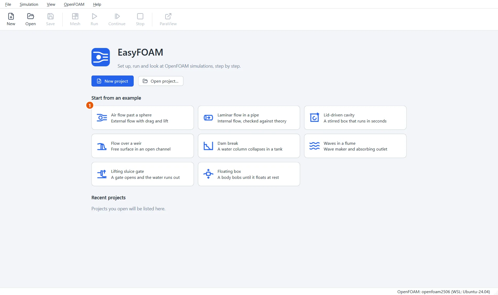
2Name the project
The project is an ordinary folder that EasyFOAM creates for you.
- Type a name, for example
sphere. - Click Create project.

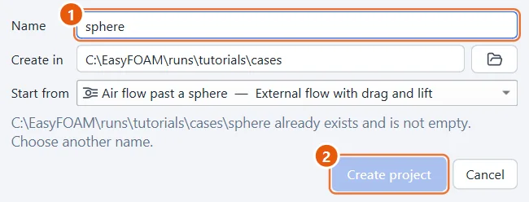
3The body
The first shape is the sphere, ball. Its surface refinement decides how fine the mesh is on its skin: each level halves the size of the base cells. Level 2 to 3 means the cells there are 4 to 8 times smaller than the base cells.
- Select ball.
- Radius:
0.5m, centred on the origin. - Surface refinement, min:
2. - Surface refinement, max:
3, used where the surface curves.

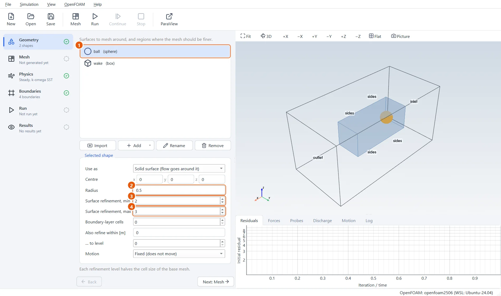
4A finer mesh in the wake
The second shape is not a solid. It is a refinement region: a box behind the sphere inside which the cells are made smaller, because that is where the wake is and where the flow changes quickly.
- Select wake.
- Use as: Refinement region.
- The box reaches from 1 m ahead of the centre to 4 m behind it.
- Refinement inside:
1, so half the base cell size.

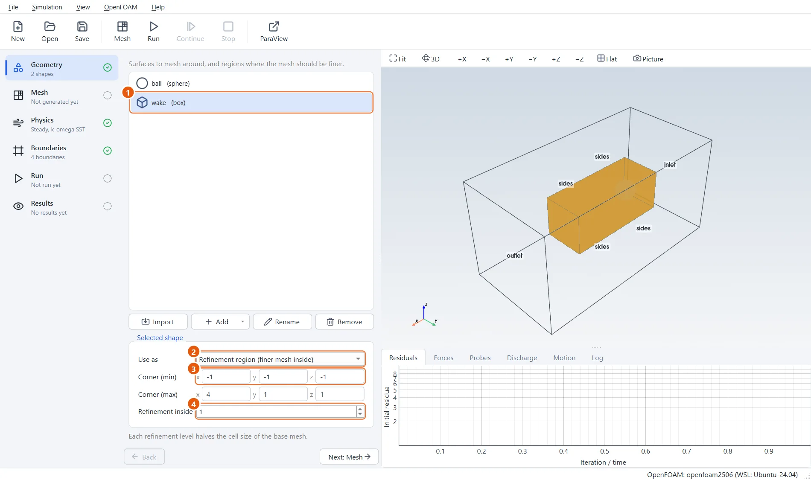
5The wind tunnel
The base mesh is the tunnel: 10 m long, 5 m wide and 5 m high, made of 0.25 m cubes. The sphere sits 3 m from the inlet, with 7 m behind it for the wake. The faces already carry useful names: air comes in through inlet (xMin), leaves through outlet (xMax), and the four sides are far away.
- Corner (min)
-3,-2.5,-2.5and Corner (max)7,2.5,2.5. - Cells:
40,20,20. - The names of the six faces.
- Click Mesh in the toolbar (or press F5).

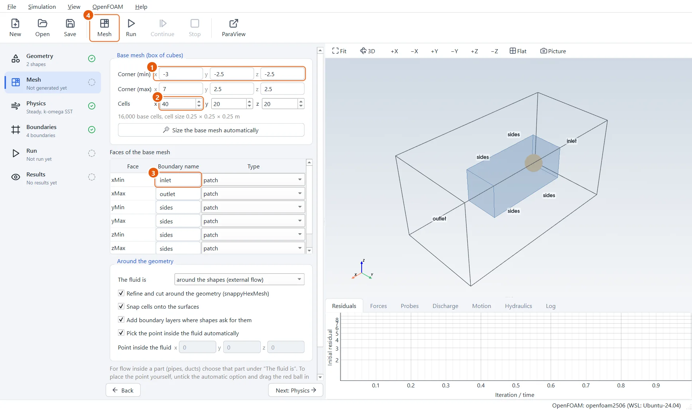
6The mesh
Meshing takes about a minute. The result has roughly 28,000 cells: coarse far away, finer in the wake box, finest on the sphere.
- The number of cells.
- Turn the view with the left mouse button to look at the sphere's surface mesh.

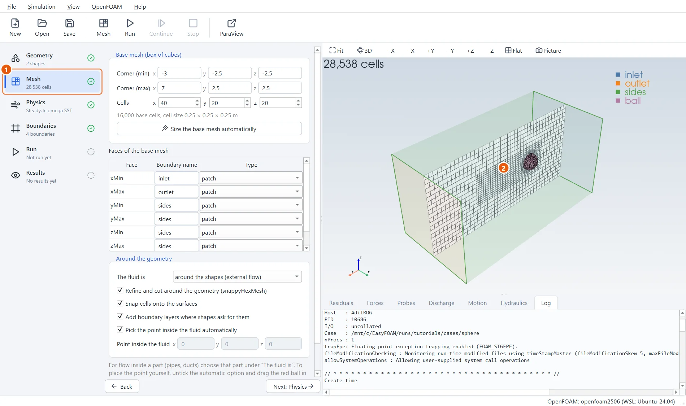
7Air and a turbulence model
The defaults fit: steady flow of air with the k-omega SST model, the usual first choice for flow around bodies. Set the starting velocity to the wind speed so that the run does not have to accelerate the air from rest.
- Flow type: Incompressible flow, steady.
- Turbulence: k-omega SST.
- Fluid: Air.
- Initial velocity:
10,0,0.

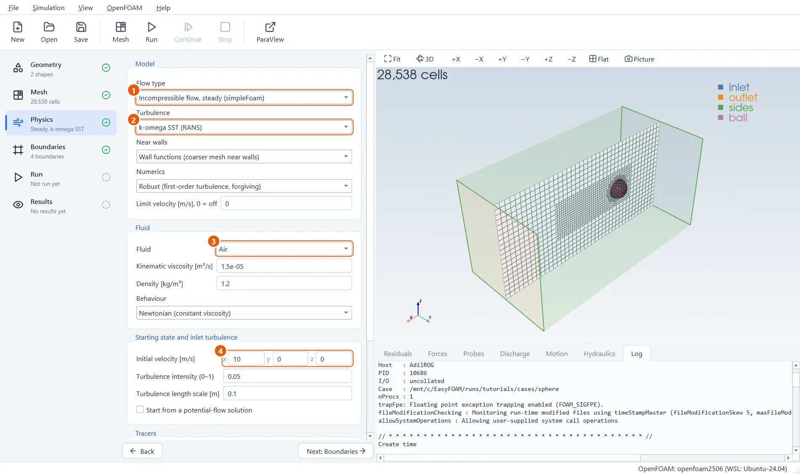
8The wind
Only the inlet needs a number. The outlet is a pressure outlet at zero, and the sides are slip boundaries: nothing flows through them and they cause no friction, which is how a far-away boundary should behave. The sphere itself, ball, is a wall.
- Select inlet.
- Condition: Velocity inlet.
- Velocity:
10,0,0.

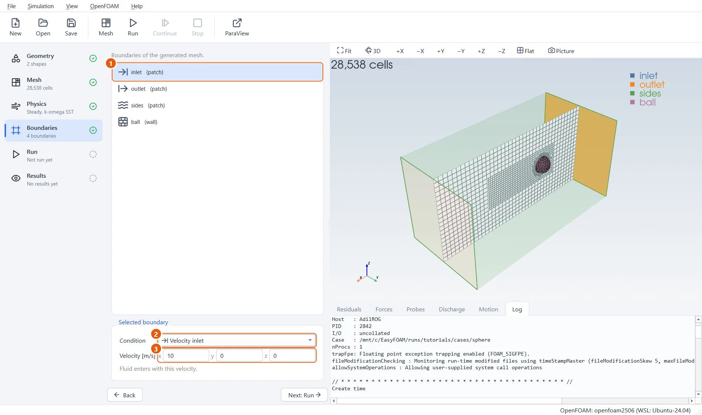
9How long to run
Two hundred iterations are enough for the drag to settle on this mesh.
- Iterations:
200. - Save every (iterations):
50. - Processor cores:
4. The mesh is split and put back together for you.

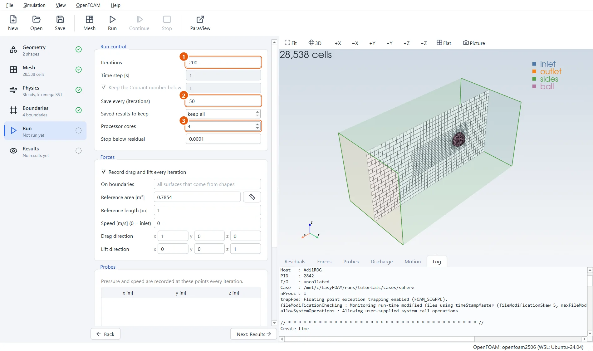
10Measure the drag
Further down the same panel, switch on the force monitor. The drag coefficient compares the force with the pressure of the wind on the body's frontal area, here a disc of radius 0.5 m: π × 0.5² = 0.7854 m².
- Tick Record drag and lift every iteration.
- Reference area:
0.7854. The ruler button estimates it from the shapes. - Reference length:
1, the diameter. - Click Run in the toolbar (or press F6).

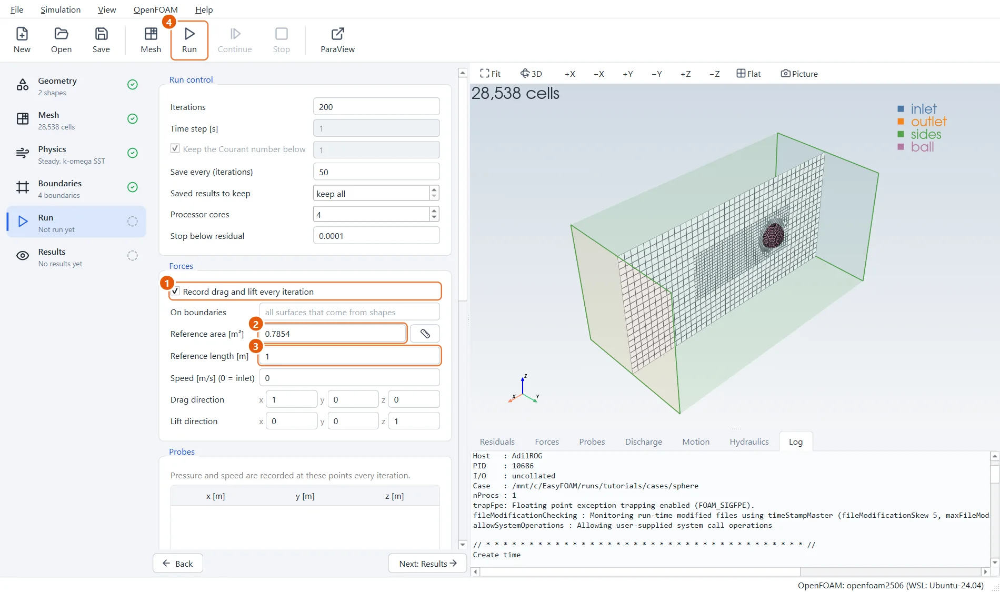
11Watch the drag settle
Open the Forces tab while the run goes on. The drag coefficient Cd swings at first and then flattens out. A force that no longer changes is a better sign of a finished run than the residuals.
On this coarse mesh Cd ends near 0.21. Measurements for a smooth sphere at this speed lie between 0.1 and 0.5, because the flow is right at the point where the drag suddenly drops; a finer mesh is needed to say more.
- Open the Forces tab.
- The latest coefficients, and the forces in newtons.

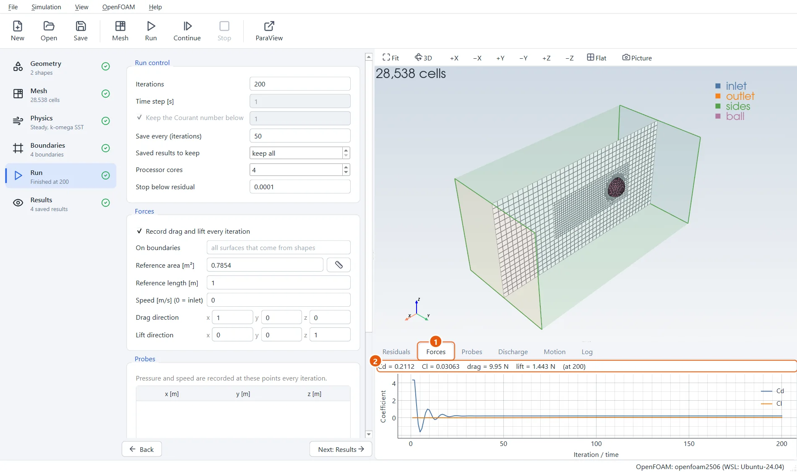
12The flow around the sphere
A slice through the middle shows the air slowing to a stop at the front of the sphere, speeding up over the top and bottom, and leaving a slow wake behind.
- Quantity:
U. Trypfor the pressure, too. - Slice plane: Normal to y.
- Drag Slice position to move the slice through the tunnel.

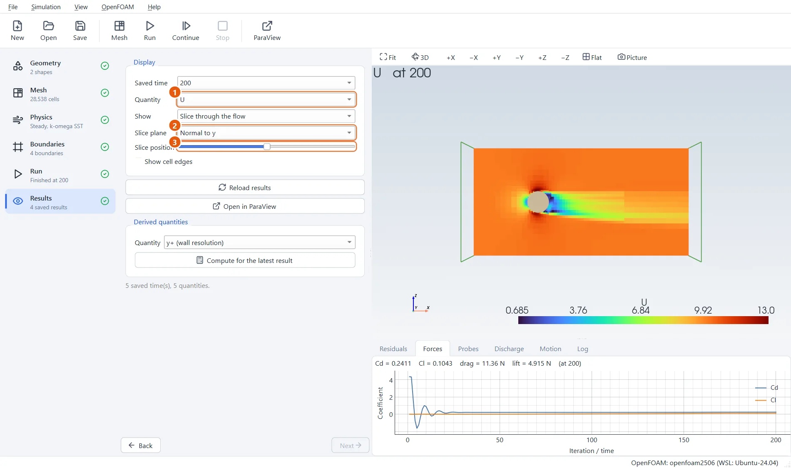
13Is the mesh fine enough at the wall?
Turbulence models make assumptions about the thin layer of air next to a wall, and those only hold if the first cell has the right height. The number that tells you is called y+. With wall functions, as used here, it should lie roughly between 30 and 300.
Here it runs from about 130 to 1100, with a mean near 600: the cells on the sphere are too thick. That is the honest verdict on this quick example mesh, and the reason its drag figure is only a rough one. The next step shows what to do about it.
- Under Derived quantities, choose y+ (wall resolution).
- Click Compute for the latest result. The sphere is then coloured by y+.
- The range of y+ on each wall is written here.

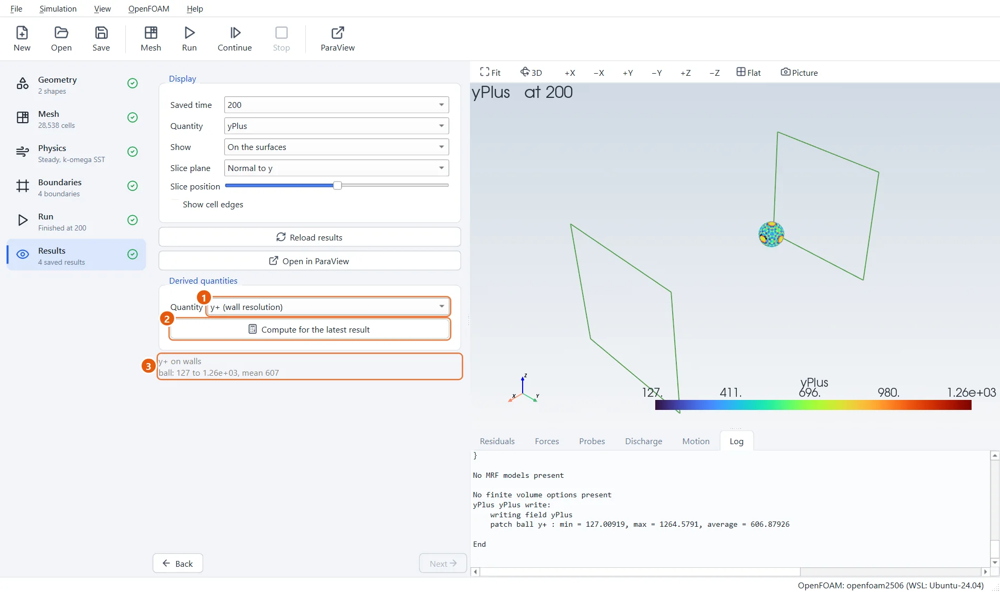
14Try it yourself
- Raise the sphere's surface refinement to
3and4, mesh and run again: y+ falls and the drag changes. - Give the sphere Boundary-layer cells (try
3) in the Geometry step: thin cells stacked on its skin bring y+ down much more cheaply than refining everywhere. - Replace the sphere: click Import in the Geometry step, bring in an STL or STEP file of your own body, and click Size the base mesh automatically.